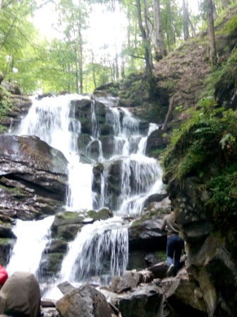
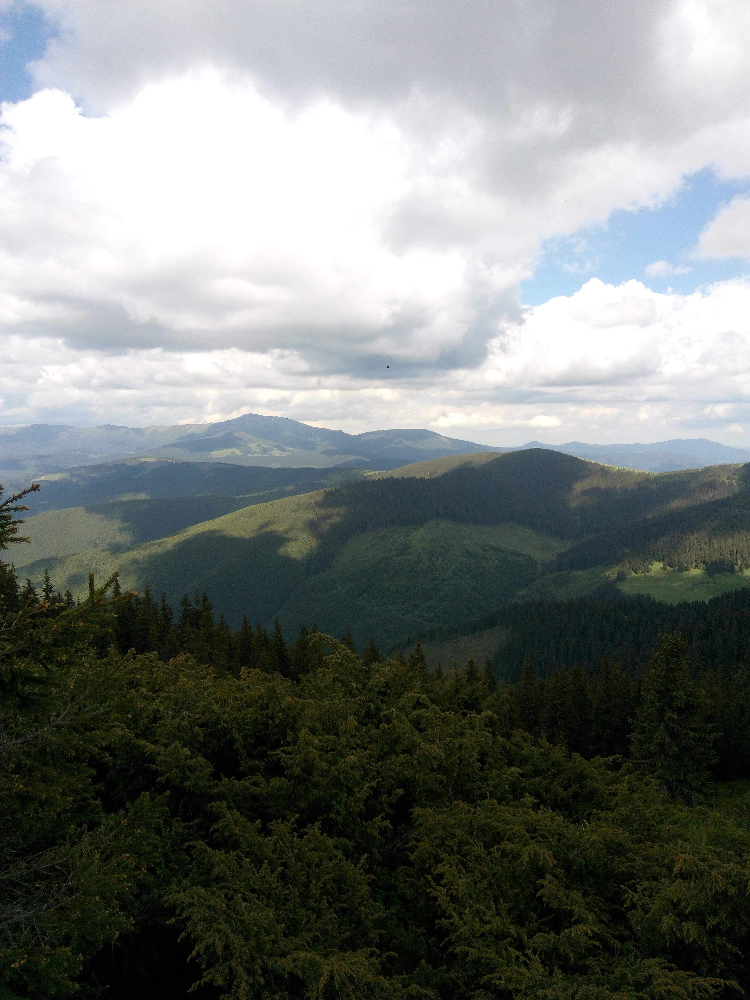

Borzhava
Polonyna Borzhava, one of the largest mountain ranges in the Ukrainian Carpathians
Read more...


Chornohora
This route goes along the Chornohora ridge, which is the most popular place...
Read more...